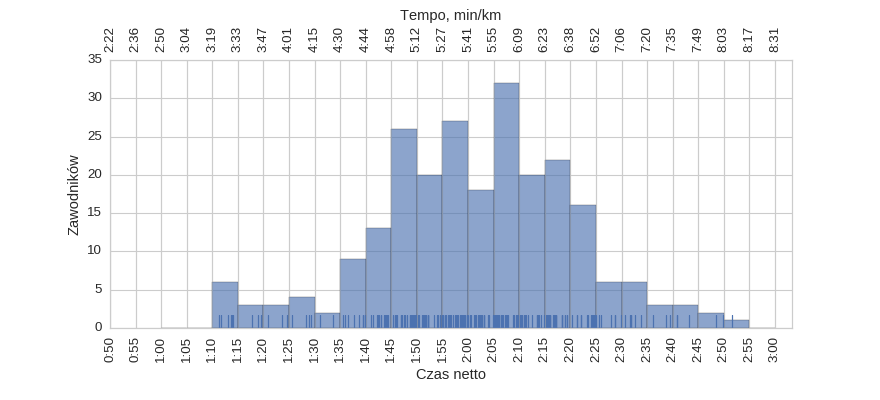
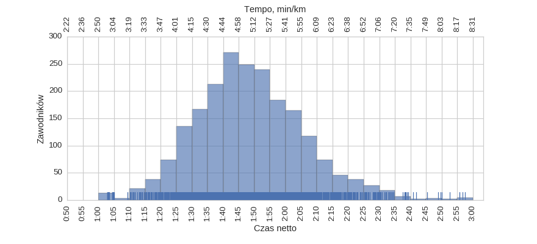
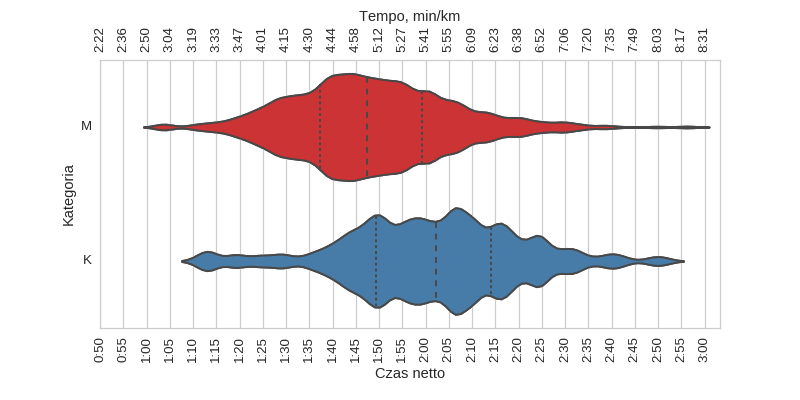
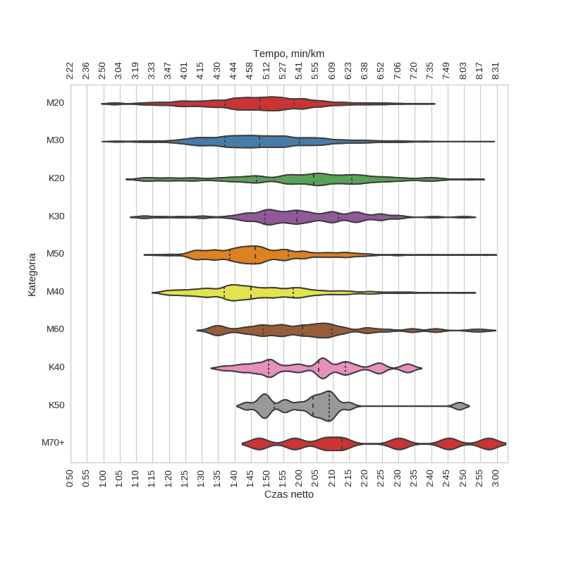

3 Carrefour Półmaraton Warszawski (2008)
Histogramy
Klasyfikacja generalna
| mean | std | min | 25% | 50% | 75% | max | |
|---|---|---|---|---|---|---|---|
| czas | 1:49:54 | 0:17:53 | 1:02:49 | 1:38:11 | 1:48:45 | 2:00:58 | 2:57:32 |
kobiety

| mean | std | min | 25% | 50% | 75% | max | |
|---|---|---|---|---|---|---|---|
| czas | 2:01:29 | 0:19:11 | 1:11:24 | 1:49:21 | 2:02:17 | 2:14:05 | 2:51:38 |
mężczyźni

| mean | std | min | 25% | 50% | 75% | max | |
|---|---|---|---|---|---|---|---|
| czas | 1:48:35 | 0:17:17 | 1:02:49 | 1:37:16 | 1:47:30 | 1:59:14 | 2:57:32 |
Wykresy rybkowe
wg płci

| czas | count | |||||||
|---|---|---|---|---|---|---|---|---|
| mean | std | min | 25% | 50% | 75% | max | ||
| plec | ||||||||
| K | 2:01:29 | 0:19:11 | 1:11:24 | 1:49:21 | 2:02:17 | 2:14:05 | 2:51:38 | 242 |
| M | 1:48:35 | 0:17:17 | 1:02:49 | 1:37:16 | 1:47:30 | 1:59:14 | 2:57:32 | 2110 |
wg kategorii

| czas | count | |||||||
|---|---|---|---|---|---|---|---|---|
| mean | std | min | 25% | 50% | 75% | max | ||
| kat | ||||||||
| K20 | 2:01:11 | 0:22:30 | 1:11:24 | 1:46:48 | 2:04:10 | 2:15:51 | 2:51:38 | 91 |
| K30 | 2:00:22 | 0:17:58 | 1:11:47 | 1:49:24 | 1:59:06 | 2:11:37 | 2:49:50 | 90 |
| K40 | 2:03:20 | 0:15:52 | 1:36:00 | 1:50:21 | 2:05:45 | 2:13:52 | 2:33:51 | 40 |
| K50 | 2:03:01 | 0:14:23 | 1:43:35 | 1:52:11 | 2:03:58 | 2:08:53 | 2:48:34 | 19 |
| M20 | 1:47:05 | 0:17:00 | 1:02:49 | 1:37:05 | 1:47:54 | 1:58:05 | 2:37:36 | 503 |
| M30 | 1:48:47 | 0:17:21 | 1:03:06 | 1:37:04 | 1:47:38 | 1:59:53 | 2:55:40 | 863 |
| M40 | 1:47:36 | 0:16:46 | 1:18:12 | 1:36:54 | 1:44:58 | 1:57:52 | 2:50:04 | 451 |
| M50 | 1:48:33 | 0:15:30 | 1:15:30 | 1:38:37 | 1:46:22 | 1:56:28 | 2:56:45 | 226 |
| M60 | 2:02:16 | 0:19:18 | 1:32:24 | 1:48:48 | 2:00:50 | 2:09:46 | 2:55:44 | 60 |
| M70+ | 2:19:54 | 0:25:27 | 1:47:26 | 2:02:59 | 2:12:54 | 2:37:46 | 2:57:32 | 7 |
Menu
HistogramyWykresy rybkowe
∙ wg płci
∙ wg kategorii
Dystans: 21.0975 km
Liczba uczestników: 2371
Wygenerowano: 2016-03-28 20:46:31.053087